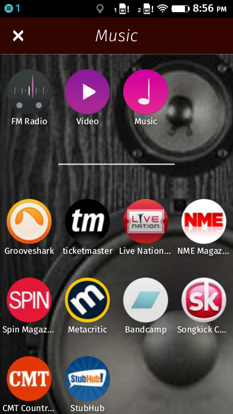
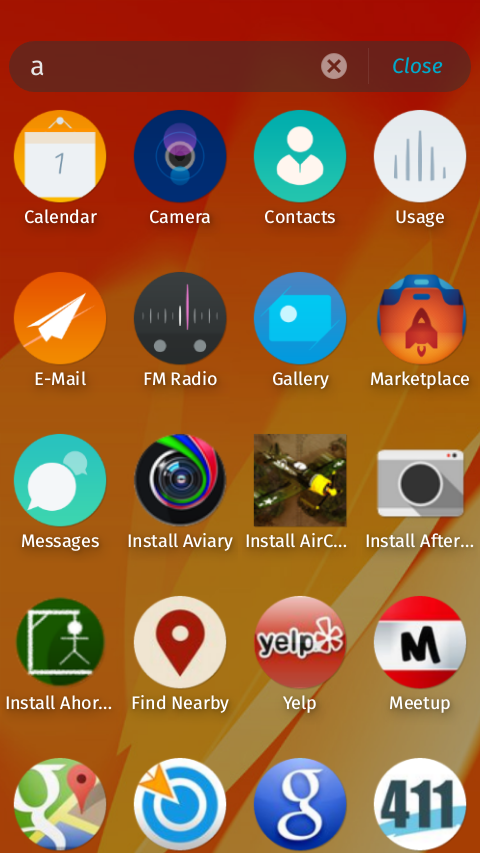

Presented by Kevin Grandon / kgrandon@mozilla.org
One feature, split into multiple applications and libraries.
2.0 is the first release that we've used real web components, and we leveraged them heavily in the vertical homescreen.
 
var grid = document.getElementById('thegrid');
grid.add(new GaiaGrid.Mozapp(app));
grid.add(new GaiaGrid.Bookmark(bookmark));
grid.render();
In-depth integration testing.
Mock http servers to test application servers and various HTTP states.
var installer = new AppInstall(client);
installer.installPackage(server.manifestURL);
// Stop the server from responding
server.cork(server.applicationZipUri);
client.waitFor(pausedState);
// Resume the download
server.uncork(server.applicationZipUri);
client.waitFor(readyState);
scrollTo(0, 0, {behavior: 'smooth'});
Thanks to everyone who has supported the effort.